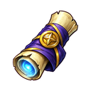

Başlangıç XP Parşömeni
T1- İçinden çıktığı
 Selestit Lonca Sandığı
Selestit Lonca Sandığı  Adamantit Lonca Sandığı
Adamantit Lonca Sandığı- Nereden gelir
- Günlük giriş ödülü, Haftalık sıralama
Selestit Lonca Sandığı Adamantit Lonca Sandığı
Selestit Lonca Sandığı Adamantit Lonca Sandığı  Obsidyen Lonca Sandığı
Obsidyen Lonca Sandığı